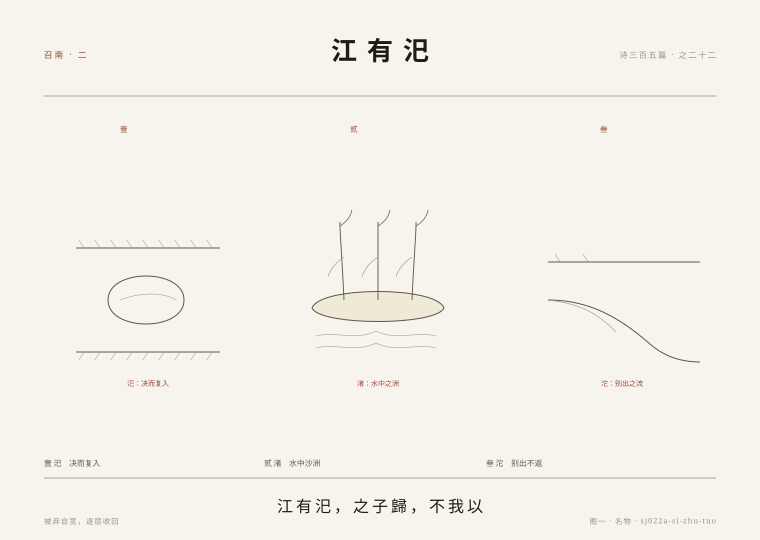
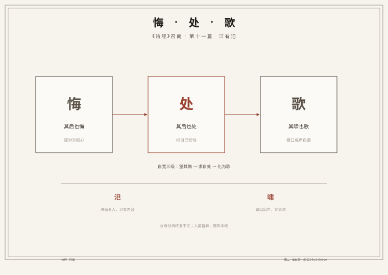

第二十二篇 江有汜
召南 · 之二 SJ022
朗读 · 普通话
依经文正文朗读，句读从文；不配乐、不改速、不加拖腔。全库同一音色（豆包 TTS），非播音员录制。
一 解题
诗三判：
- 谁在说：一个被丢下的人。对方成行了，他站在江水边上，看水有分有合，反过来自宽。
- 说什么事：江水有决而复入的支流，有沙洲，有别出的沱；那个人走了，不带我、不与我、不过我。三章末了，先是「其後也悔」，再是「其後也處」，最后是「其嘯也歌」。
- 为何编在此：召南多写「已成」，此篇是召南里少见的离散之辞。把它放在卷末几篇之间，正见「成」之前也有不成、被弃的一面。
《毛序》：「《江有汜》，美媵也。勤而无怨，嫡能悔过也。文王之时，江沱之间，有嫡不以其媵备数，媵遇劳而无怨，嫡亦自悔也。」——读作媵妾之诗，归到嫡妾之恩。
朱子《诗集传》：「后人见其弃己如此，而作此诗以自宽也。」——朱子只取「弃己自宽」，不再坐实媵妾身份。
本库的看法：骨在弃妇之辞的三层自解。
先以「其後也悔」替对方留一条回头路；再以「其後也處」把自己安下来；终以「其嘯也歌」把怨唱成歌。三章不是复沓，是递进——由指望对方悔，到自己安处，到啸歌自遣。水有分流，终复于江；人虽暂弃，情之所系未绝。
二 经文
第一章
江有汜，之子歸，不我以。不我以，其後也悔。
第二章
江有渚，之子歸，不我與。不我與，其後也處。
第三章
江有沱，之子歸，不我過。不我過，其嘯也歌。
分章：毛传、朱子皆三章，章五句。三章只换三组字：汜／渚／沱，以／与／过，悔／处／歌。前两章结在「其後也」三字上，末章独换「其嘯也歌」，章法由等其悔，变为自啸自歌。
## 三 韵读
| 一 |
汜、以、悔 |
之部 |
| 二 |
渚、與、處 |
魚部 |
| 三 |
沱、過、歌 |
歌部 |
三章三韵：之部沉，魚部缓，歌部舒展。末章歌韵开口最大，「其嘯也歌」是全篇的落脚声——怨到这里，唱出来了。
四 字义与名物
- 汜（sì）——江水决出、复入于江的支流。不是「泛滥」，是分支之后再合。
- 之子——那个人（指所弃之人眼中的对方）。
- 归——出嫁；一说远行而归。
- 以——与、携带。「不我以」＝不以我（不带我）。不是「以为」。
- 悔——后悔。
- 渚（zhǔ）——水中小洲。水有所隔，亦有所聚。
- 与（yǔ）——相与、偕同。「不我與」＝不与我。
- 处——安处。「其後也處」，言后将自安。不是「居住」的实指。
- 沱（tuó）——江水的别出支流。
- 过——过访、过从我。「不我過」＝不过我。
- 啸——蹙口出声，蹙口而吟。不是「长啸呼啸」，是舒气成声。
五 今译
第一章
江有决而复入的支流，那个人出嫁了，不带我。不带我，日后他会后悔。
第二章
江中有小沙洲，那个人出嫁了，不偕我。不偕我，日后他会安处下来。
第三章
江有别出的沱水，那个人出嫁了，不来看我。不来看我，我蹙口成声，且把它唱成歌。
译注：「处」译「安处」，是自处之安，不作「居住」；「啸」译「蹙口成声」，与「歌」连文，是自遣的吟咏，不是放声大喊。
六 章旨
一章：望其悔。水有汜而复合，人虽去，望其后悔。
二章：求自处。水有渚而中聚，既不偕同，便把自己安住。
三章：化为歌。水有沱而别出，终不我過；于是啸而成歌，把不平唱出来。
三章的心境是下行三级：悔（还把指望放在对方身上）→
处（把指望收回自己身上）→
歌（连自处也不必说，只把它唱出来）。水的三分：汜复合、渚中聚、沱别出，恰与三种心境相应。
七 诗教
- 赋：直陈被弃之情，以江水起兴而即事言情，赋中带兴。
- 观：可观一「宽」。弃而不骂，替对方想「其後也悔」，再替自己想「其後也處」。
- 群：此篇本是一人之辞；而江沱之间、嫡媵同嫁之制，使一人之怨连着一群人的处境。
- 怨：怨最深，而逐层收束。「不我以／不我與／不我過」三句是怨；末章「嘯也歌」是怨之出口——怨而不激。
八 分寸与边界
- 不可把「汜」解作洪水泛滥。汜是决而复入的支流，正取「分流再合」之意；解作泛溢，喻义就全失了。
- 不可把「以」「与」「过」都译成「要」「给」之类笼统字。三字各有定向：带、偕、访，一层比一层远。
- 不可把「处」解作居住、处所。它是「安处」的心境，与「悔」「歌」同为情态。
- 不可把「啸」解作后世的长啸、啸傲。此处是蹙口出声，近于吟叹。
- 不可把此篇坐实为嫡媵争宠之事。《毛序》的媵妾框架存为解释史；诗里只有江水与一个被弃的人。
九 存疑
- 作者身份：媵妾说（毛）与弃妇 /
远行见弃说（朱子一路）并列。本库取「被弃之人」，不指男女。
- 「归」之定向：说出嫁，一说远行归来。本篇与婚嫁语近，本库从前说。
- 「处」之训：一训「安处」，一训「止」（止步不前），一训「怵惕」。本库取安处。
- 「嘯也歌」的情绪：一说悲吟，一说欢歌，一说哭笑相杂。本库取「自遣而近悲」，不定为喜。
- 三章是否一人一事：一说三章反复咏一事，一说分指三时。本库取反复递进之一事。
十 跨典
- 《召南·小星》——同卷。彼言命分，此言被弃；皆把不平收回自身，可对看。
- 《邶风·谷风》「泾以渭浊，湜湜其沚」——同是见弃于旧，彼叙始末甚详，此以江水自宽。
- 《卫风·氓》「不我遐弃」——「不我以／與／過」之句法，与「不我遐弃」同一倒装口吻。
- 《尔雅·释水》「决复入为汜」——汜之得名，此为诂训所本。
- 《左传·襄公十四年》「师众以顺为武」类言「与」——可借「与」之偕从义，解「不我與」。
十一 双卡与图
双卡五对：
| 汜（决而复入） |
沱（别出之流） |
| 以（携带） |
过（过访） |
| 悔（望对方悔） |
处（自己安处） |
| 渚（中聚之洲） |
啸（蹙口成声） |
| 其後也悔 |
其嘯也歌 |

图一 · 汜·渚·沱 名物图

图二 · 悔·处·歌 义理图
读图三处：
- 汜要画成「分出又合回」：一股水从主流旁出，画一个弯再汇回去；直画成两条平行河，就不是汜。
- 渚是水中一块陆地：四面环水，上可生草；与岸相连的叫岸，不叫渚。
- 沱是别出的长流：与汜相反，沱出去不复回；图上水流方向要画出「去而不返」。